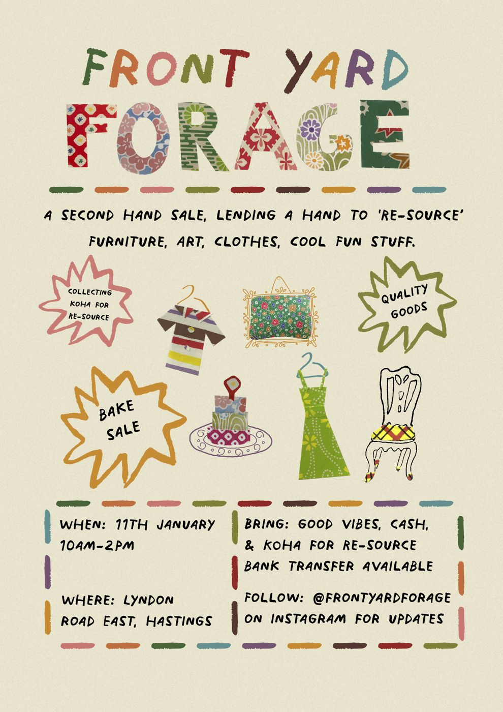
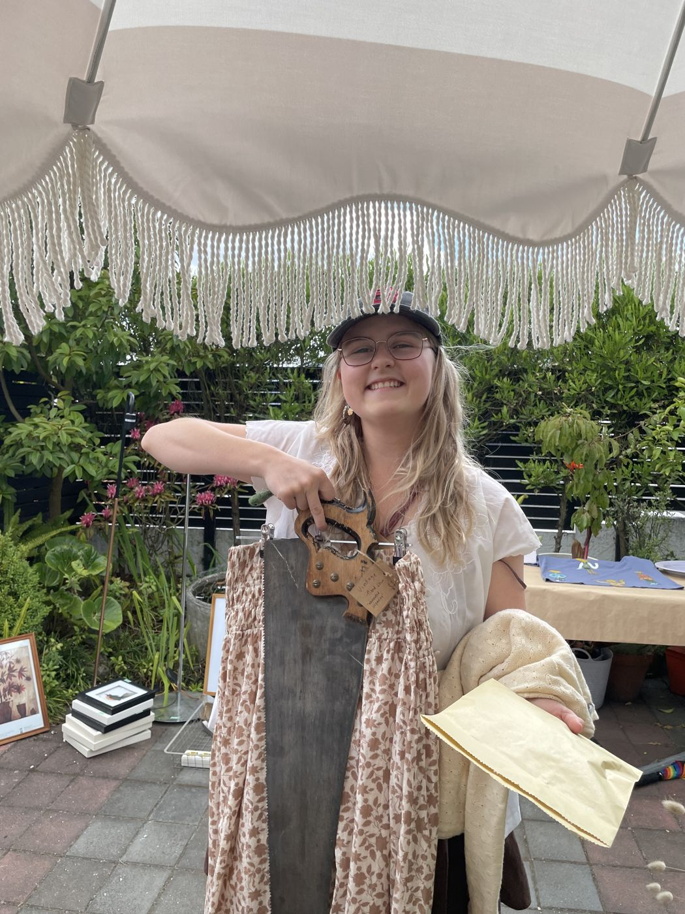

2022/23
Front Yard Forage
As an op-shopped addict Esta had created a pretty large collection of fun things that needed better homes. She found her friends with the same issue. So she thought why not bring them all together in her front yard.
She created Front Yard Forage, a one day only event bringing together her friend's second hand clothing, art and furniture to find new homes. The sale also raised funds for ReSource, a charity that rehomes goods to people in need. The event was about having a bit of summer fun and embracing the better way to buy.
This event featured a small side of Lanky Design work, the joy this work brought to people lit a wee fire in Esta's mind that she needed to bring more people together over joyful things.

